A Transdisciplinary Design Studio based in Zurich.
Latens & Forma is a space where art, design and material research meet and inform one another.
Combining traditional craft with emerging technologies, the studio explores how materials behave, change and interact — where surfaces meet, forms emerge, and the conventional boundaries between disciplines begin to blur.
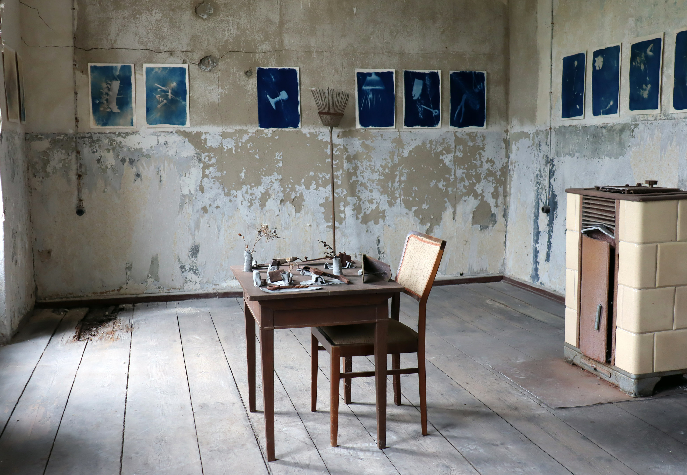
Abbild I — Cyanotypes & Solvents
A 12-artwork cyanotype inventory created from the immediate natural surroundings of the KuBa station. Rusted tools encounter fragile plants in four rows of natural solvent formulations: water, onion skin, nettle, black tea, and soda.
View Project & Specs →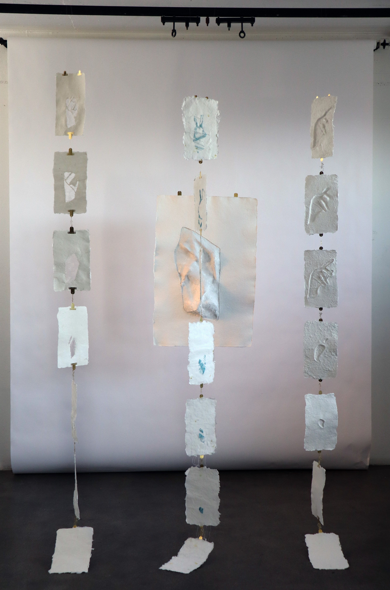
The Alphabet of Collective Memory
Explores the body as a living archive of collective experience. Integrates three hand gestures emerging from seventeen years of uprisings in Iran, transforming into an alphabet of embodied forms in handmade paper, copper yarns, and silver Persian words.
View Project & Specs →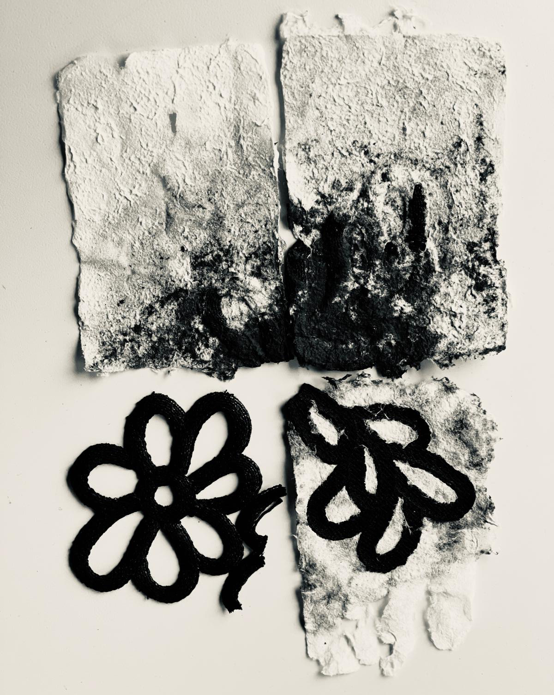
Paper as Skin
An experimental investigation into the material possibilities of paper. Approaching paper not simply as a surface, but as a living skin whose behavior, resistance, and sculptural potential emerge through cutting, layering, and cocooning.
View Project & Specs →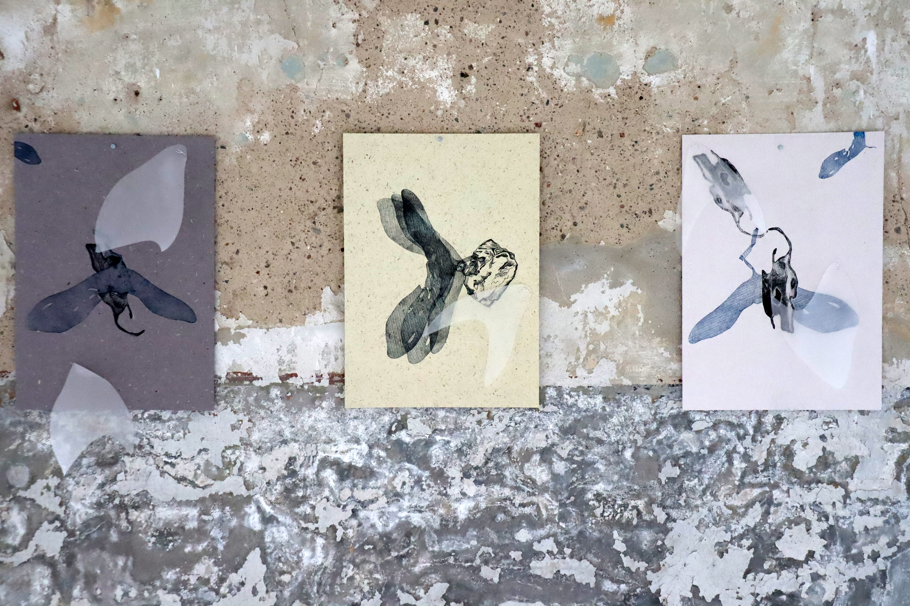
Abbild II — Hybrid Forms
Layered compositions of aquatint, etching, and Tetra Pak printing onto handcrafted paper containing embedded hay fibres. A dialogue between constructed mark-making and organic imperfection.
View Project & Specs →Projects
Portfolio overview of recent residency bodies, material research investigations, and sculptural archives.
Abbild I — Cyanotypes & Solvents
2026Abbild II — Hybrid Forms
2026The Alphabet of Collective Memory
2024–26Paper as Skin
2025–26Abbild I — Cyanotypes & Solvents
The series with 12 cyanotype artworks is created from the immediate surroundings of the KuBa Cultural Railway Station in Klein Warnow. Rusted tools found in the surrounding area encounter fragile plants. A fragmentary inventory of the site emerges in four rows.
Through contact and alteration, hybrid forms emerge as testimonies of their encounter. Intervention in nature gives rise to something new while simultaneously destroying habitats. Human tools appear like trophies in a ceaseless hunt that leaves traces everywhere.
The image connects the contrasting worlds of the modern industrial world and fragile nature. Between nature and human design, function and form, use and decay, past and present perception, an intermediate space arises — a new form in which both worlds overlap.
Solvent System (No Chemical Dyes)
Materials found in the immediate surroundings: onion skin, nettle, black tea, and soda are used to evoke the color values and their transformations:
| Row | Solvent Formulation |
|---|---|
| First Row | Water as solvent |
| Second Row | Onion skin as solvent |
| Third Row | Nettle leaves, some with soda as solvent |
| Fourth Row | Black tea, nettle leaves, and soda as solvents |
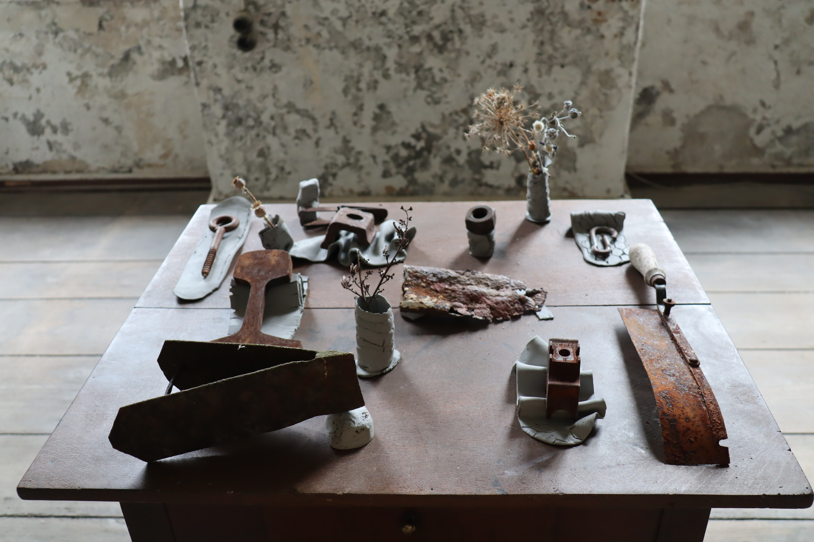
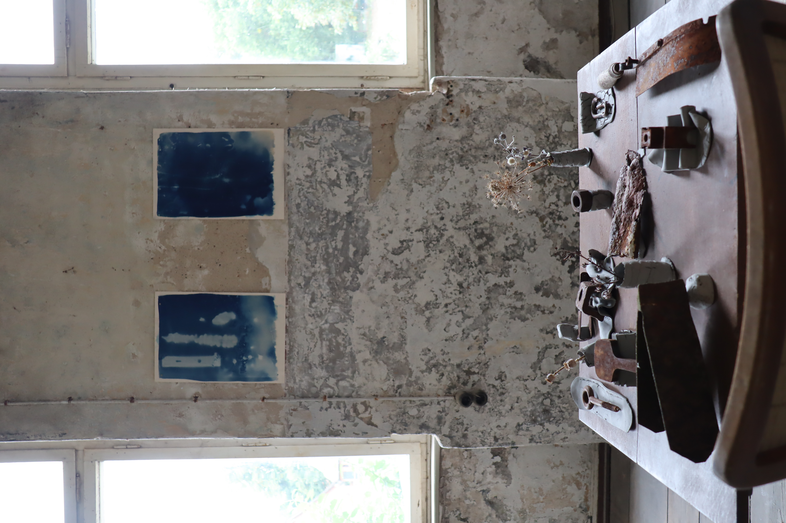
Artwork Inquiry
For acquisition inquiries, exhibition loans, or technical questions regarding this series, please submit an inquiry directly to the studio.
Abbild II — Hybrid Forms
The second series of Abbild translates forms encountered in the surrounding landscape into layered compositions of print, drawing and textile elements. Organic shapes, collected through walks and filtered through memory, are reinterpreted through different printing techniques, including aquatint, etching and Tetra Pak printing.
Different paper surfaces, including paper containing hay fibres, become part of the work’s material language. A tension arises between technical mark-making and natural imperfection, recollected forms and immediate tactile materiality.
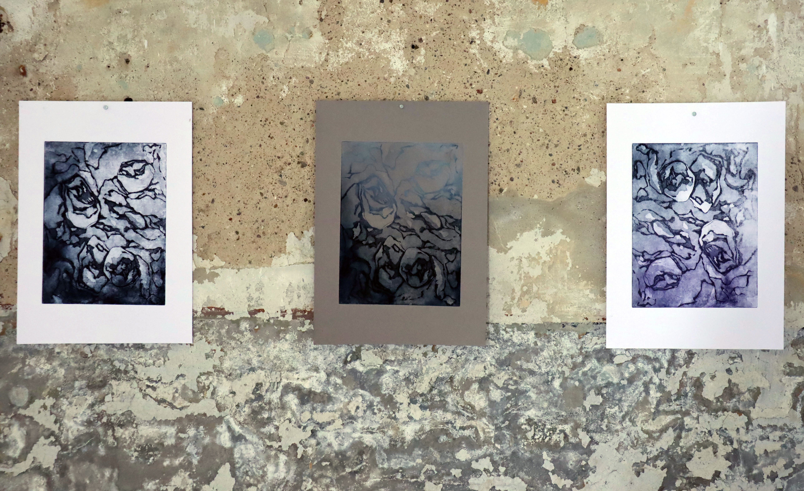
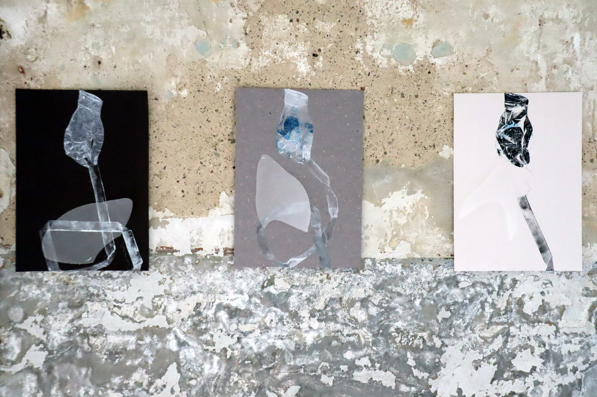
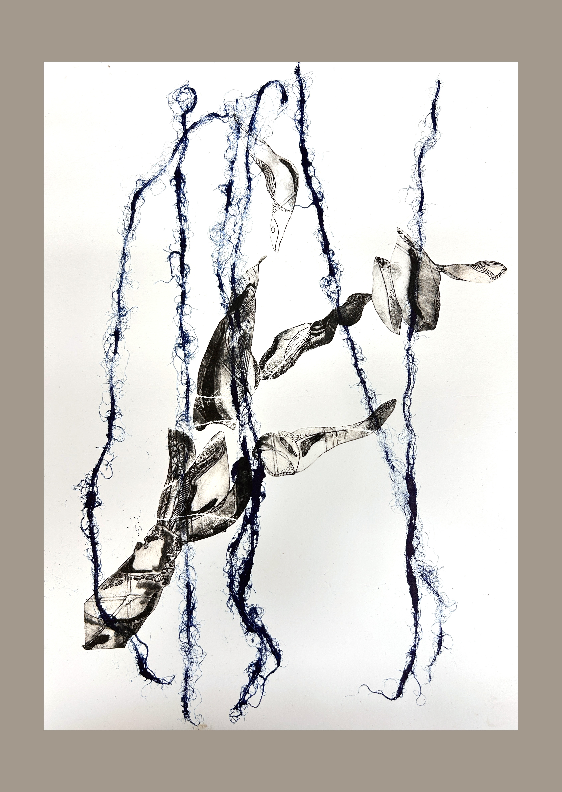
Artwork Inquiry
For acquisition inquiries, exhibition loans, or technical questions regarding this series, please submit an inquiry directly to the studio.
The Alphabet of Collective Memory
The Alphabet of Collective Memory explores the body as a living archive of collective experience. The work integrates three hand gestures emerging from seventeen years of uprisings in Iran, transforming from a single common shape into an alphabet of embodied forms.
Through handmade paper, mould-making, embroidery, mesh and metal threads, each gesture unfolds across a sequence of forms, moving from latent potential towards a recognizable sign. The fragments become an alphabet of embodied memory, where gesture, material and history meet.
The connecting points of the different stages are filled with woven copper yarns and Persian words made out of silver. The words behave oppositely to the evolution of the hand shapes: as the gestures solidify, language questions memory, resistance, and how individual trauma crystallizes as collective memory.
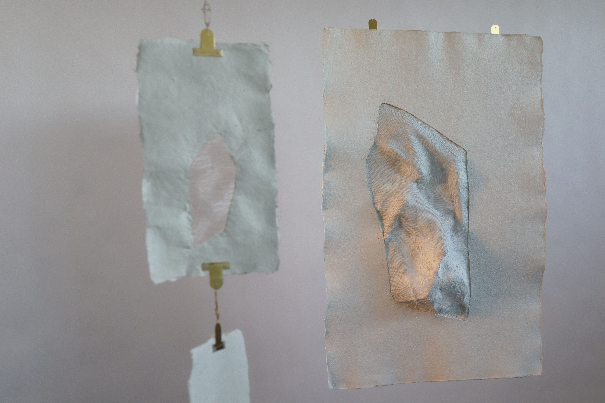
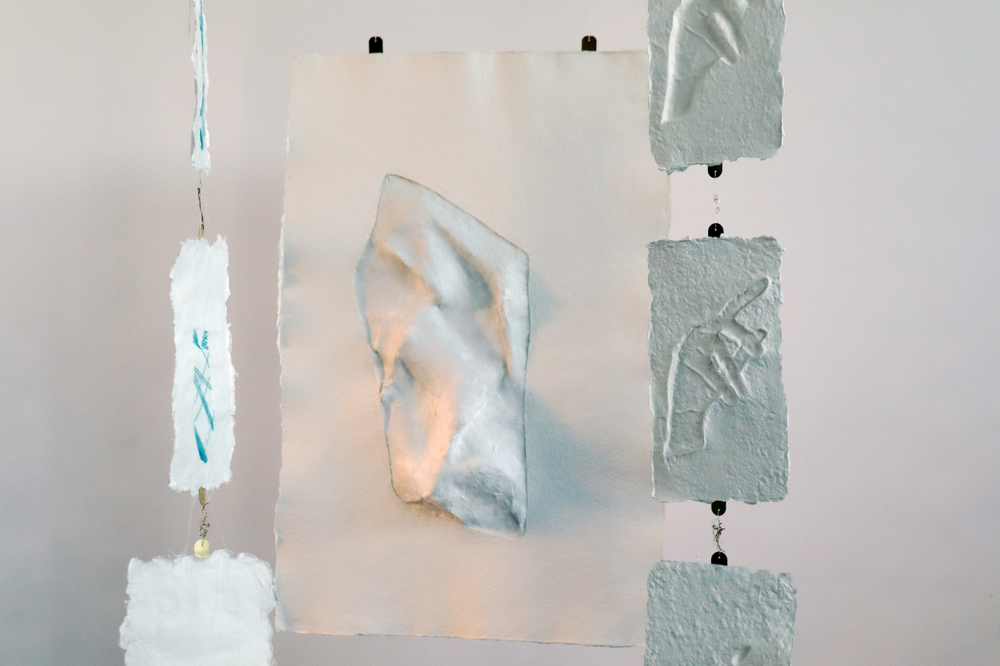
Artwork Inquiry
For exhibition loans, institutional acquisitions, or curatorial research regarding this installation, please submit an inquiry directly to the studio.
Paper as Skin
An experimental investigation into the material possibilities of paper. Through cutting, layering, cocooning and surface treatments, the studies explore gradations, textures and the transition from flat surfaces to sculptural forms.
The work approaches paper not simply as an inert carrier, but as a skin whose behavior, resistance, and potential emerge through the process of making.
These experiments set the foundation for ongoing studio investigations into paper as a medium moving freely between drawing, surface, and three-dimensional architectural object.
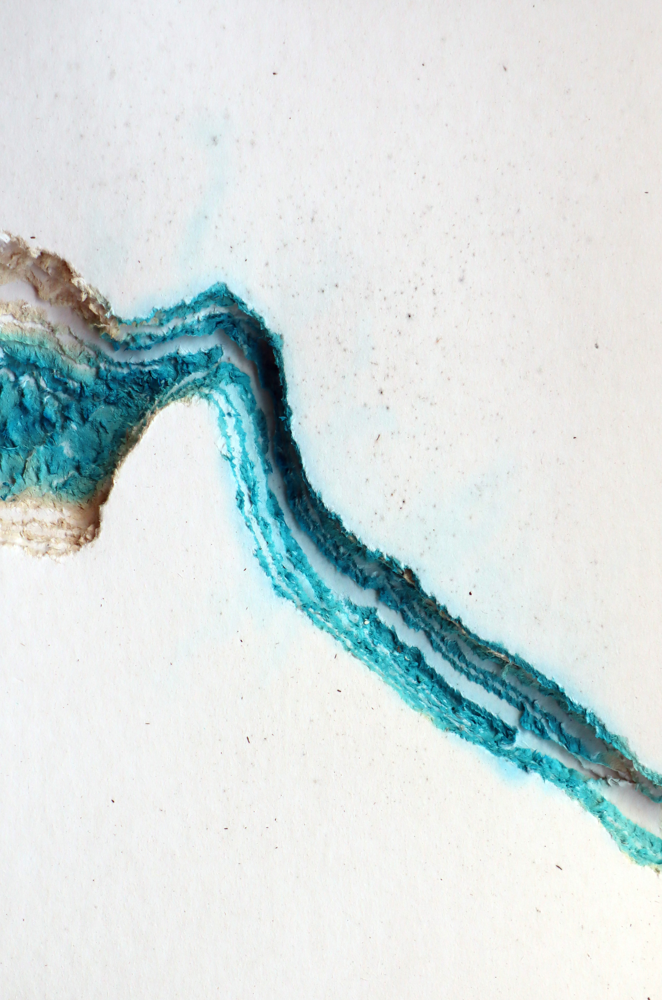
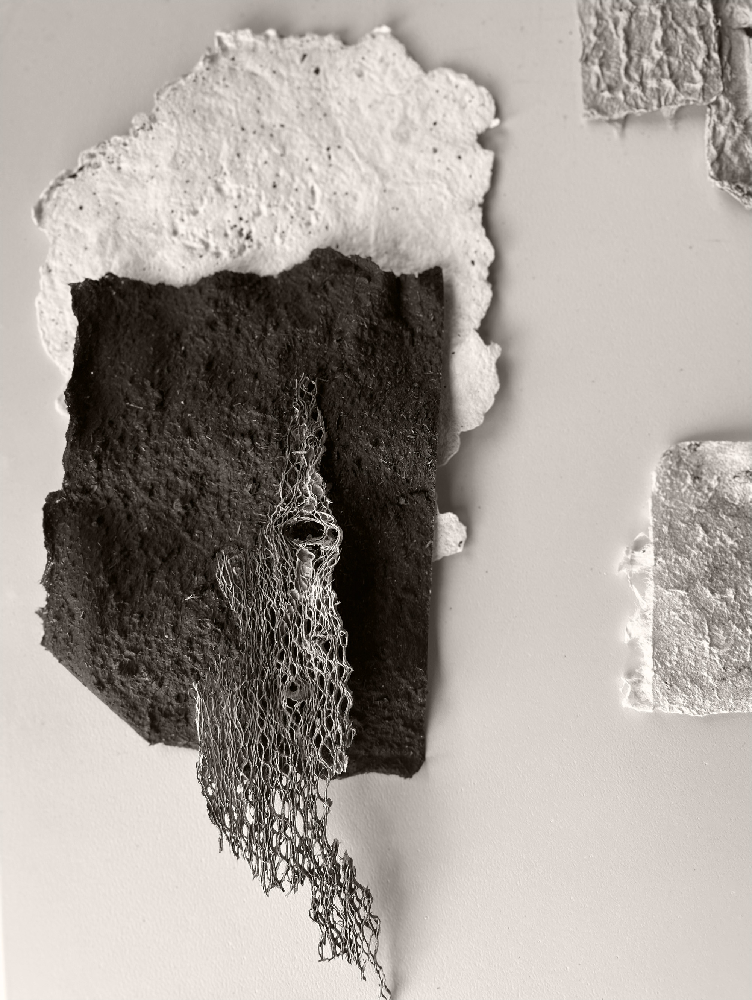
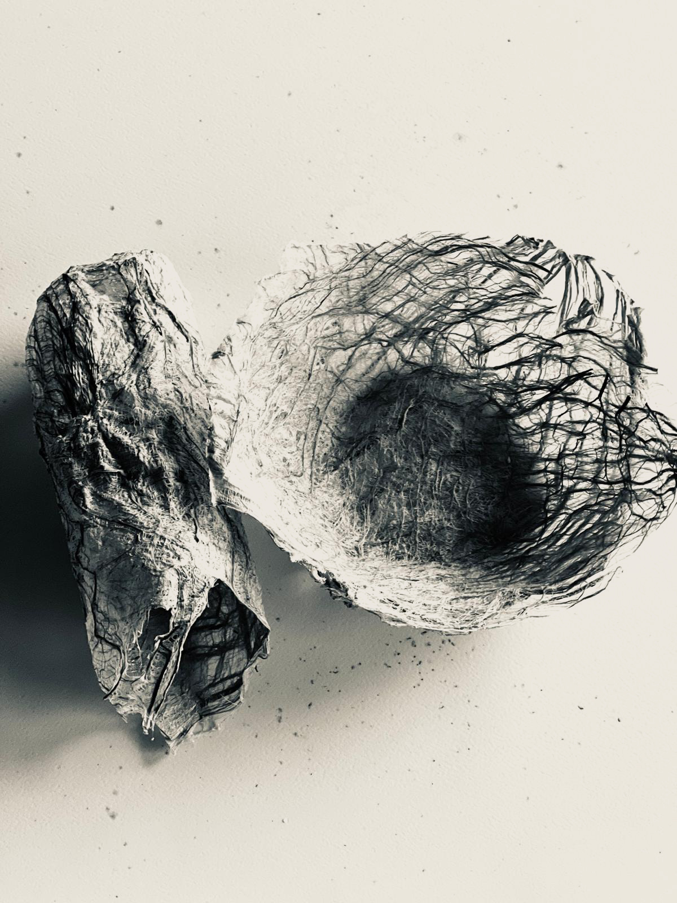
Artwork Inquiry
For exhibition loans, acquisitions, or technical questions regarding this series, please submit an inquiry directly to the studio.
About
Latens & Forma is a transdisciplinary art and design studio based in Zurich, founded by Romina Karimi.
With a background in fashion and textile design, jewelry, art and art education, the practice moves between materials, techniques and disciplines. The studio works with paper, textiles, ceramics, metal and drawing, combining traditional craft with digital fabrication and emerging technologies.
Through hands-on experimentation, the studio explores how materials behave, change and interact, where surfaces meet, forms emerge and the boundaries between materials begin to blur. Latens & Forma is a space for this ongoing exploration, where art, design and material research meet and inform one another.
Co-Creators
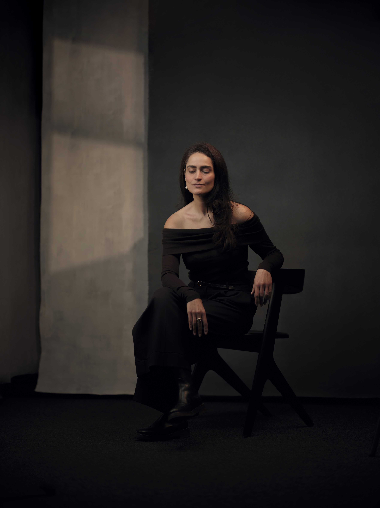
Romina Karimi
Founder & Creative Director · ZurichRomina Karimi is the founder of Latens & Forma, a transdisciplinary art and design studio based in Zurich. With a background in fashion and textile design, jewellery, art and art education, her practice moves between materials, techniques and disciplines.
She works with paper, textiles, ceramics, metal and drawing, combining traditional craft with digital fabrication and emerging technologies. She explores how surfaces meet, forms emerge, and material boundaries blur.
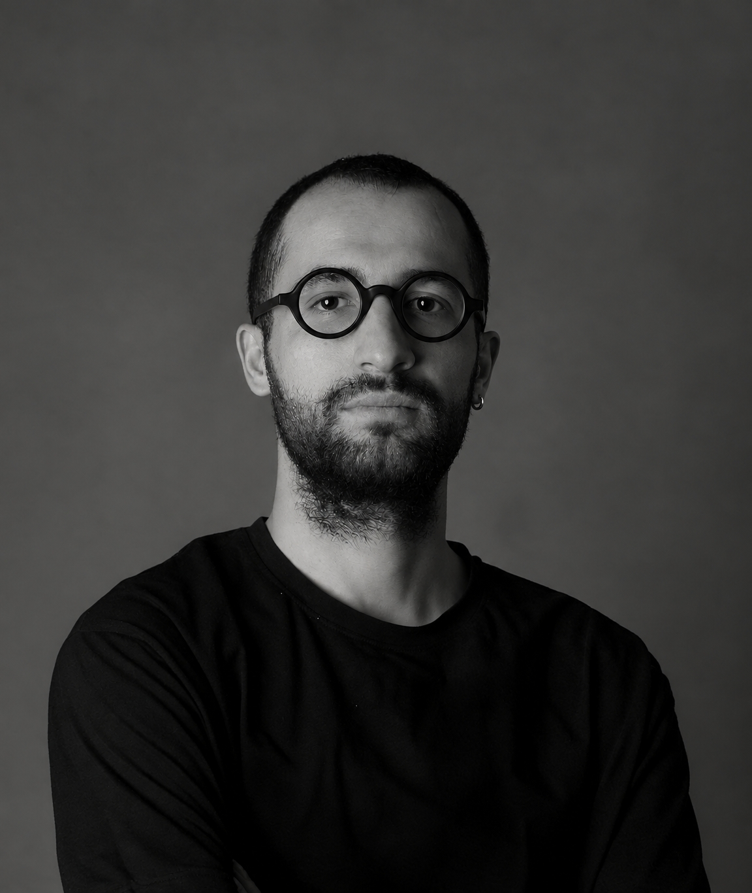
Meysam Hame-ei
Brand Director · TehranAn award-winning graphic designer, painter and multidisciplinary artist based in Tehran. Meysam directs the studio’s brand identity, typographic architecture, and publication design.
His work investigates the tension between historical script traditions, modernist structures, and experimental print languages.
Amir Boroumand
Scientific ConsultantAmir Boroumand collaborates with Latens & Forma as scientific consultant on material research, solvent formulations, natural chemical extraction, and substrate behavior.
His consultation informs the studio’s empirical solvent matrices (including the four-tier plant and tannin solutions used in cyanotype works) and the chemical longevity of experimental fiber substrates.
The Beauty of Withering
Preliminary drawing studies documenting organic decay, plant morphology, and the material transition from organism to graphic sign.
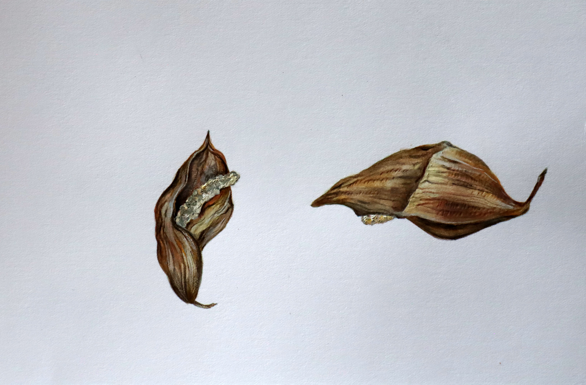
Drawing Study 01
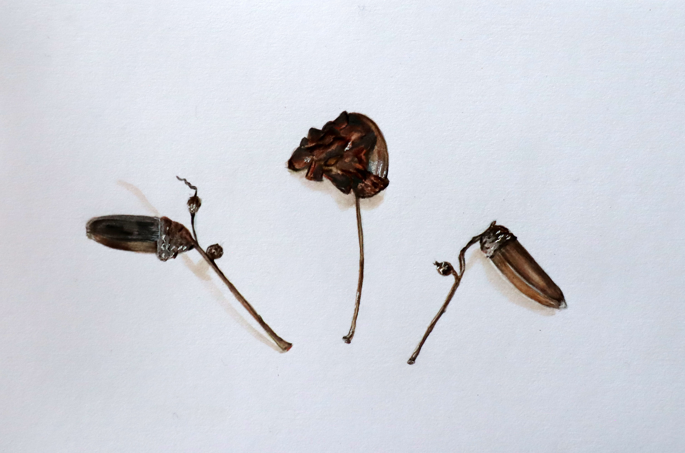
Drawing Study 02
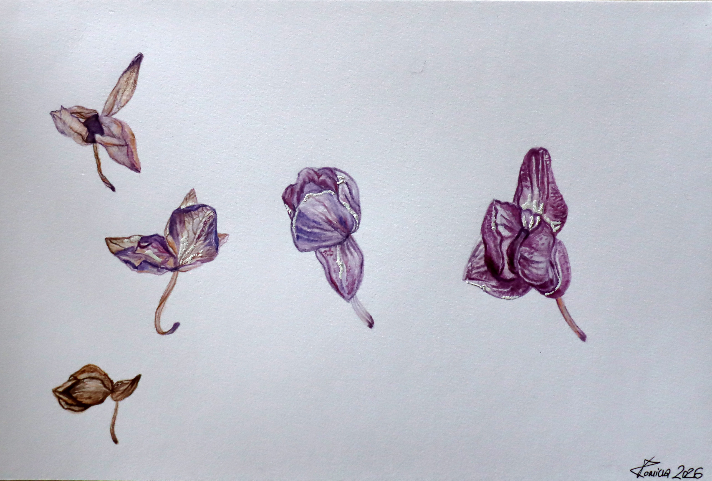
Drawing Study 03
Full essays and field dispatches from ongoing European residencies and material experiments are currently in preparation. The publishing section will feature regular editorial writing upon launch.
Contact
For studio visits, artwork acquisitions, exhibition proposals, or collaborations, please get in touch.
Send a Message
Messages route directly to hello@latensandforma.com.